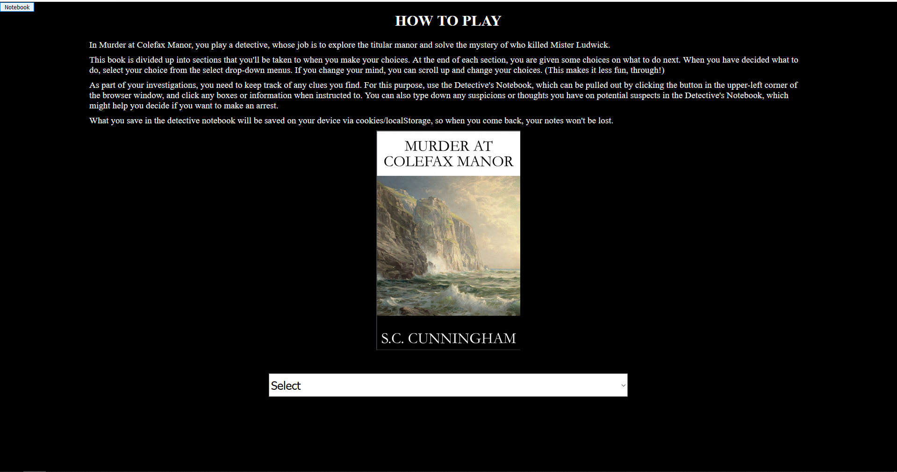

Goofing around with APIs
APIs are cool. Lately, more and more websites been opening up access to their APIs, which makes
all kinds of fun stuff possible.
JavaScript Fun
A random nerd challenged a room filled with nerds to take a string and arrange all of the
letters so the block of letters appears as a perfect block. Many nerds came up with random
approachs to this random challenge.
The random challenge is silly enough that I might come back to this from time to time as my
scripting skills improves over the years.
SVG fun
I was playing with Google's grasshopper app the other day, and was somewhat impressed by how
easy it was to animate SVGs using JavaScript's D3 package... And decided to play around with
that idea on my desktop.
ThreeJs
I became very interested in ThreeJS when I discovered that the library had support for VR gears.
I thought, why not make a personal world instead of a personal website, like in those weird
japan animes? This "Hello World" experiment with ThreeJs showed me that the learning curve with
this library is very gentle. It's easy to do anything with ThreeJS, just read the documentions!
It's very well documented, and there's PLENTY examples to reverse-engineer for whatever you
need!
Circle
On a whim, I decided to try to find a way to arrange texts into a circle.
I thought it would be easy... It wasn't easy at all! Some trigonometry was
required to arrange everything into circle. The result of this miniproject
is that I now have a very easily reuseable snippet of code that can arrange
anything into circles... If I wanted to, I could make it recursive, circles all
the way down and up!
I've used the circle snippet I made when redoing one of my old course homeworks for fun, see
details below.
Keyframes
Keyframe doodles here! The grandfather clock is my first Keyframe doodle,
which I pretty much made right away after learning about CSS keyframes for
the first time. So easy, and customizable!
Checkbox Hack
I heard that by cheesing how HTML and CSS works, you can make onclick-like
events to occur without using any scripting languages. This miniproject is
my attempt at the checkbox hack.
The checkbox hack is a VERY interesting approach to accessibility. It's bad
semantics, but it's very dobable to design websites that fake onclick events
by using the checkbox hacks. The main drawback is that it will not degrace
gracefully when used in older browsers... Instead of degrading in any ways,
it would just break, completely!
Moving Popup
I was inspired by a random attack by randsomwares and annoying pop-ups on a
website to see how annoying I could make those pop-ups to be! What I came up
with is a pop-up that, soon as it's spawned, start running around the screen
making it very frustrating to try to close the pop-up.
One big thing I learned from this miniproject was that pop-ups can only be
triggered by the client's actions, limited to a single pop-up per action, so
you can't for example, cause thousands of pop-ups to appear on a single click.
I found a few ways to completely lock up the browser in a way where the task
manager is needed to kill the browser... Because that vector of attack is so
annoying, I'm not posting it here! The one I'm making public is harmless, you
can stop the pop-up window from moving by closing the website page that spawned
the pop-up.
Turning a text adventure book into JSON
This project was an exercise in dynamic programming. The goal was to make something that
would change based on the choices the user makes. I went way overboard by deciding to
turn
an .ebook into easily parseable JSON for a javaScript engine I made to work with text
adventure books! It will work with any text adventure book long as the input is the
JSONified book.
For the book I selected, it was pretty fun finally "playing" the book after porting it
over. I didn't read a single thing in the book when figuring out how to easily jsonifity
it. If I had to redo the project, there is a ton of things I would be able to do better.
Sadly, an adventure book parser/player thingy isn't THAT cool!

Flex Layout Practice
Flexbox layouts are
awesome!
It made making this goofy site very easy! I didn't have to worry about screen sizes, etc...
Flex takes
care of all of that!
Browser Detector
I made this prototype a long time ago when someone asked me if
I could get more infomation about their vistors without using
third-party scripts. It was much easier than I expected. I did
it in both PHP and JavaScript. With PHP, it was much easier to
extract infomation about visters, and it was easy to set the script
to email me asking me to update it when it encounters a new type of
browser and devices.
{kind=link}
{kind=link}